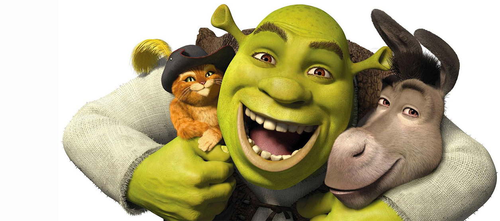

About Shrek
Shrek is a green rotund ogre with brown eyes and a bald head. He wears a white long sleeved tunic within his brown turtle designed mini vest, brown pinstriped pants and dark short boots with a rip folded design in each side. While rescuing Fiona from the tower, he wears pieces of knight armor.
Shrek and his friends
Shreck's characteristics
- He's a big green ogre
- He's nothing friendly
- He has two best friends
Shrek's Friends
Shrek has two best friends, Donkey and Puss in Boots. Click on the link to read more about them: